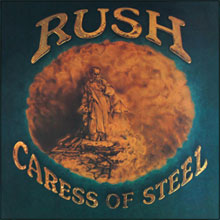
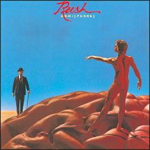
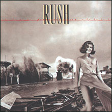
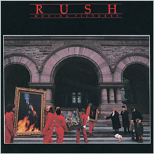
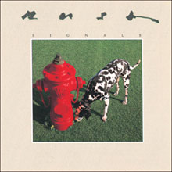
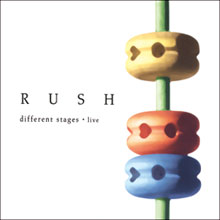
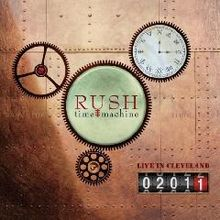

Rush
Studio Albums

Rush
(1974)

Fly by Night
(1975)
- 
Caress of Steel
(1975)

2112
(1976)

A Farewell to Kings
(1977)
- 
Hemispheres
(1978)
- 
Permanent Waves
(1980)
- 
Moving Pictures
(1981)
- 
Signals
(1982)

Grace Under Pressure
(1984)

Power Windows
(1985)

Hold Your Fire
(1987)

Presto
(1989)

Roll the Bones
(1991)

Counterparts
(1993)

Test for Echo
(1996)

Vapor Trails
(2002)

Feedback
(EP)
(2004)

Snakes & Arrows
(2007)

Clockwork Angels
(2012)
Live Albums

All the World's a Stage
(1976)

Exit...Stage Left
(1981)

A Show of Hands
(1989)
- 
Different Stages
(1998)

RUSH in Rio
(2003)

R30
(2005)

Snakes & Arrows Live
(2008)
- 
Time Machine 2011: Live in Cleveland
(2011)